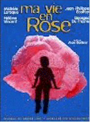

Contents | Features | Reviews | Books | Archives | Store |
 |
|
| Movie Credits | Buy It! |
Ma Vie en Rose
Review by Elias Savada
Posted 13 February 1998
|  | Directed by Alain Berliner Starring
Georges Du Fresne, Michele Laroque, |
This Belgian feature from first-time director Alain Berliner has been garnering good reviews since its year-end release in selected U.S. cities and is still expanding into additional markets. It opens in Washington DC the weekend of February 13th. Since opening in Europe last May, Ma Vie en Rose (My Life in Pink) has won acclaim and attention at numerous film festivals, including Cannes, Karlovy Vary, New York, and Sarajevo. Although it won the Golden Globe for Best Foreign Language Film, it didn't make the final cut for this year's Oscar contenders, which may doom the picture's attempt to reach a wider audience. Too bad, as it's a sensitive tale about a strange child lost in a sea of normalcy. As it has grossed more than $750,000 domestically to date, this will not rival Titanic, but it would be a shame if this film sank before the movie-going public tired of that Queen of the Sea and had a chance to savor this Queen of the ABCs.
Seven-year-old Ludovic (played with an amazing down-to-earth casualness by newcomer Georges du Fresne) comes out of the doll closet and decides that he no longer cares to be a boy. It's not that he considers himself gay, in fact he can not even grasp that concept at his tender age. It's just that he believes himself destined to be a girl, grow into a woman, and marry schoolmate and neighbor Jerome, just as tomorrow will follow today. When it's show-and-tell at school, he doesn't bring a hand-held electronic game like his fellow students, but proudly displays Pam and Ben, two overdressed Barbie-and-Ken look-a-likes. Ludovic's innocence makes this and other scenes in this amusing and poignant drama soar. His singular and often surreal grasp of reality force his family and surrounding suburban community to deal with the situation in painful and often comic misunderstanding. Set against a pastel housing scheme designed with bright pinks and sparkling yellows, the film often flutters off into dream sequences where Ludovic plays out his fantasies with a magical life-size Pam (the star of a widely popular girls’ television program), who, along with Ludovic's grandmother, are the only people who truly give the child the sympathy he desires from everyone else.
Says Berliner, "The movies often treat sexual identity as comedy material. With Ma Vie en Rose, I wanted the child's innocence and his amazing certainty to make his questions touch our hearts and allow us to understand them. There is a lot to laugh about in the film, but there is also a good dose of drama." Indeed the script, which Berliner co-wrote with Chris van der Stappen, is an affectionate twist on the Job story, sprinkled with drops of comedy.
The situation escalates quickly as Ludovic dresses up in the clothes of Jerome's dead sister as he and Jerome pretend to wed. Ludovic's mother and father (finely etched by Michele Laroque and Jean-Philippe Ecoffey), and his siblings run hot-and-cold in trying to understand the child's motives. It doesn't help that Jerome's father is Ludovic's father's boss and both families car-pool their children to school. As tempers flare throughout the neighborhood, Ludovic's family is ostracized by their friends, the boy is expelled from school, and the father is fired. Just as the family feels Ludovic may be heading back to their fold, he does something that sends them farther off the edge. Counseling from a therapist goes nowhere, and when Ludovic’s older sister tells him about X and Y chromosomes, the boy fantasizes a hilarious sequence where toy block letters fall from the sky and those which would have made him a woman accidentally end up in a trash can.
Forced to flee their home, the family hopes Ludovic’s new surroundings may alter his odd behavior. And it seemingly does until he meets Chris, er, Christine, another child who can not rationalize her sexuality. The film culminates with another brightly colored moment in Pam's dreamy doll house, just the right recipe to leave a smile on your face. All may finally be well in Ludovic’s off-kilter world.
Contents | Features | Reviews | Books | Archives | Store
Copyright © 1999 by Nitrate Productions, Inc. All Rights Reserved.